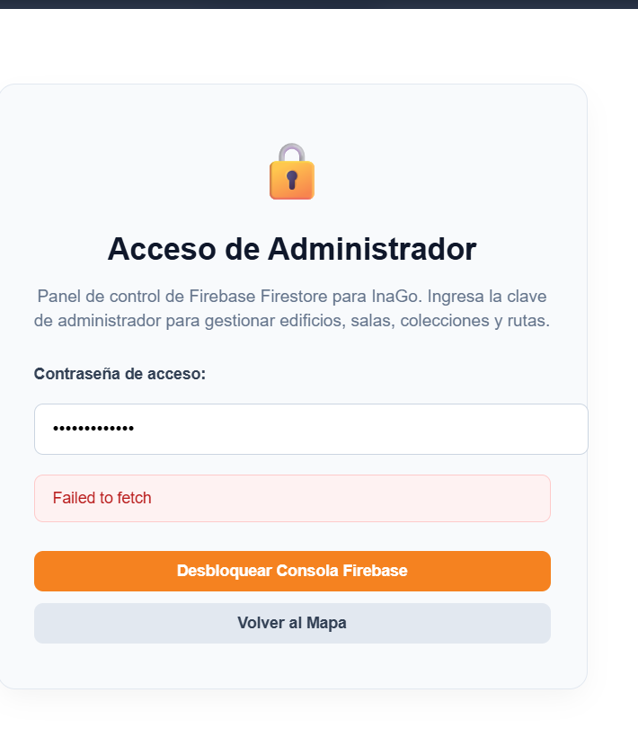

En las últimas décadas, la interacción de los usuarios con diversas plataformas digitales interconectadas ha pasado de ser un lujo experimental a una necesidad cotidiana. Sin embargo, en infraestructuras complejas como las instituciones de educación superior, la alta circulación diaria de estudiantes, docentes, personal administrativo y visitantes externos puede transformarse en una barrera crítica de orientación cuando no existen herramientas digitales precisas. El proyecto InaGo!, desarrollado en el laboratorio Inacode de INACAP Sede Renca, surge como una respuesta tecnológica a la problemática de la desorientación espacial, proporcionando un mapa interactivo tridimensional asistido por algoritmos de cálculo de rutas óptimas y un gemelo digital de los edificios del campus.
Desde una perspectiva arquitectónica, la solución implementa una estructura distribuida que separa rigurosamente la presentación en el cliente web —construida con Angular y el motor gráfico WebGL BabylonJS— de la lógica de negocio y persistencia en el servidor. El backend, desarrollado sobre Node.js y Express mediante una arquitectura hexagonal organizada por cortes verticales (vertical slicing), orquesta la gestión de recintos, la consulta a Google Cloud Firestore y la resolución de trayectorias transitables mediante el algoritmo A-Star. Debido a esta complejidad técnica, donde convergen cálculos matemáticos vectoriales, renderizado volumétrico intensivo y sincronización en la nube, el aseguramiento de la calidad del software (Quality Assurance) no puede reducirse a una simple verificación exploratoria de la interfaz. Por el contrario, exige un proceso de evaluación metódico, estructurado y auditable.
El presente informe técnico documenta de manera integral y analítica la ejecución de las cuatro primeras etapas contempladas en la rúbrica de evaluación final de testing: Etapa 1 (Planificación del testing), Etapa 2 (Ejecución práctica de testing), Etapa 3 (Documentación de resultados) y Etapa 4 (Corrección y mejora del prototipo). A través de este documento se justifica el porqué de cada decisión técnica antes de abordar el detalle empírico, adoptando como fundamento los estándares internacionales ISO/IEC 25010 (calidad del producto software), ISO/IEC 27001 (gestión de la seguridad de la información), las directrices de OWASP API Security Top 10 (2023) y la norma ISO 9241-210 de diseño centrado en el usuario. Asimismo, la evaluación se alinea estrictamente con el marco legal chileno vigente, considerando la Ley N.º 19.628 y la próxima entrada en vigencia de la Ley N.º 21.719 sobre Protección de Datos Personales, la Ley N.º 21.459 sobre Delitos Informáticos, la Ley N.º 21.663 (Ley Marco de Ciberseguridad) y la Ley N.º 20.422 sobre Accesibilidad Universal.
La planificación del testing tiene como propósito fundamental diseñar un marco de control sistemático y verificable antes de proceder a la experimentación empírica. Este proceso permite definir con exactitud el alcance de las evaluaciones, determinar qué componentes del sistema deben inspeccionarse y establecer criterios objetivos y medibles de éxito o fallo, evitando ambigüedades interpretativas y asegurando la trazabilidad directa hacia los requerimientos funcionales y las historias de usuario aprobadas en el Product Backlog.
Para garantizar que las pruebas se desarrollen bajo condiciones técnicas controladas y reproducibles, se ha formalizado el entorno de prueba de hardware y software sobre el cual operan los componentes del prototipo InaGo!, detallado a continuación en la Tabla 1.
| Componente / Parámetro | Configuración / Versión de Software | Observación y Alcance Técnico |
|---|---|---|
| Entorno de Ejecución Backend | Node.js v24.15.0 (64-bit) / npm v10.x | Motor de ejecución de la API REST Express con inyección de variables vía dotenv. |
| Framework Frontend Web | Angular v20.3.35 (Standalone Components) | Arquitectura basada en Signals para gestión reactiva de estado y enlace de datos. |
| Motor de Renderizado 3D | BabylonJS v7.0.0 / babylonjs-loaders v7.54.3 | Renderizado WebGL de modelos Wavefront (.obj / .mtl) en canvas HTML5. |
| Base de Datos y Persistencia | Google Cloud Firestore (SDK Admin v13.10.0) | Almacenamiento NoSQL de edificios, locaciones y grafos (navigation-paths). |
| Navegadores de Evaluación | Google Chrome v131+ / Microsoft Edge v131+ | Pruebas de renderizado WebGL, eventos de ratón/táctil y visor de herramientas DevTools. |
| Sistema Operativo Host | Microsoft Windows 11 Home / Pro (x64) | Plataforma de desarrollo y ejecución de terminal para backend y cliente frontend. |
| Hardware de Evaluación | [PENDIENTE: Especificar CPU, RAM y GPU del equipo] | Parámetros pendientes de completar con las especificaciones del equipo de pruebas. |
El plan de pruebas abarca cuatro tipologías esenciales: pruebas funcionales y de integración de dominio (para comprobar la exactitud de los controladores y del algoritmo A-Star), pruebas de seguridad defensiva basadas en OWASP API Security Top 10 (2023) (para comprobar el control de acceso en mutaciones y la sanitización de payloads), pruebas de usabilidad y accesibilidad según WCAG 2.1 AA, y pruebas de rendimiento con análisis de latencias bajo almacenamiento intermedio. A continuación, la Tabla 2 consolida la matriz formal de casos de prueba planificados, vinculando cada ensayo con sus requerimientos de origen y definiendo criterios de aceptación cuantitativos y verificables.
| ID Caso | Módulo | HU / RF Origen | Tipo | Acción y Datos de Entrada | Criterio de Aceptación Medible | Prioridad |
|---|---|---|---|---|---|---|
| CP-FUNC-01 | Frontend (3D) | HU-08 / RF-01 | Funcional | Arrastre con puntero y rueda de zoom sobre Edificio A. | La cámara rota en ejes alfa/beta sin superar límites de radio (5m a 150m) ni cortes de plano. | Alta |
| CP-FUNC-02 | Frontend / API | HU-09 / RF-04 | Funcional | Ingreso de cadena de búsqueda: "Sala A106". | El sistema despliega coincidencia en lista y centra la cámara sobre el cuerpo en menos de 1 s. | Alta |
| CP-FUNC-03 | Navegación API | HU-13 / RF-06 | Integración | GET /navegacion/ruta?origen=Acceso1&destino=Sala A106 |
Retorno de código 200 con JSON conteniendo waypoints (>0), flechas vectoriales y smoothedPolyline. | Crítica |
| CP-FUNC-04 | Navegación API | HU-12 / RF-03 | Funcional | Cálculo de ruta accesible entre pisos evitando escaleras. | Grafo penaliza nodos de escaleras y selecciona ascensores/rampas; nodos continuos sin vacíos. | Alta |
| CP-FUNC-05 | Topología 3D | HU-03 / RF-19 | Funcional | Selección Edificio G -> Alternar "Piso 2" y "Entrepiso". | Piso 2 carga modelo de aulas docentes (.obj) y Entrepiso carga salas de profesores sin choque Z. | Alta |
| CP-SEC-01 | Seguridad API | HU-16 / RNF-Seg | Seguridad | Petición POST /edificios sin cabecera Authorization. |
Respuesta HTTP 401 Unauthorized inmediata; ninguna mutación persiste en Firestore. | Crítica |
| CP-SEC-02 | Seguridad API | HU-16 / RNF-Seg | Seguridad | Petición POST /edificios con Bearer token_falso. |
Respuesta HTTP 401 Unauthorized; denegación por comparación segura contra ADMIN_TOKEN. | Crítica |
| CP-SEC-03 | Seguridad API | HU-03 / RNF-Seg | Seguridad | POST /edificios con payload conteniendo HTML/script. |
Respuesta HTTP 400 Bad Request por fallo en validador sintáctico de texto seguro. | Alta |
| CP-SEC-04 | Seguridad API | HU-03 / RNF-Seg | Seguridad | POST /edificios con propiedad no permitida hack: 1. |
Respuesta HTTP 400 Bad Request por detección de campo fuera de lista blanca (Mass Assignment). | Alta |
| CP-PERF-01 | Caché / Datos | RF-11 / RNF-Disp | Rendimiento | Primera petición GET /navigation-paths (Miss). |
Consulta directa a Firestore; persistencia en Map de memoria RAM y registro de latencia. | Media |
| CP-PERF-02 | Caché / Datos | RF-11 / RNF-Disp | Rendimiento | Segunda petición idéntica GET /navigation-paths (Hit). |
Retorno desde memoria RAM en menos de 30 ms con reducción de latencia superior al 80%. | Media |
| CP-USAB-01 | Frontend UI | HU-11 / RNF-Usab | Usabilidad | Clic sobre foto de desarrollador o mascota en panel. | Apertura de visor modal (Lightbox) con zoom y fondo desenfocado; cierre mediante tecla Esc. | Media |
| CP-USAB-02 | Frontend UI | HU-11 / RNF-Usab | Usabilidad | Carga de perfil con URL de fotografía no existente en disco. | Evento (error) conmuta a iniciales vectorizadas sobre degradado sin romper estructura visual. | Media |
La fase de ejecución práctica consistió en someter los componentes de software de InaGo! a los ensayos predefinidos en la matriz de planificación, capturando evidencias fehacientes de los resultados obtenidos. Para garantizar la veracidad del proceso, los resultados se exponen de forma proporcional a la evidencia empírica disponible, clasificando cada caso como Aprobado, Fallado o Pendiente de Ejecución. La Tabla 3 resume el estado de ejecución de la totalidad de los casos diseñados.
| ID Caso | Módulo | Resultado Obtenido en Ejecución | Estado | Evidencia Asociada |
|---|---|---|---|---|
| CP-FUNC-01 | Frontend 3D | Rotación orbital y control de distancias focal sin desbordamiento de vista. | Aprobado | Ilustración 17 |
| CP-FUNC-02 | Frontend / API | Búsqueda en autocompletado y enfoque automático sobre Sala A106 verificado. | Aprobado | Ilustración 07 |
| CP-FUNC-03 | Navegación API | Ruta resuelta: 42.6 m, 14 waypoints, 6 flechas vectoriales y 52 puntos Bézier. | Aprobado | Ilustración 01 / Ilustración 07 |
| CP-FUNC-04 | Navegación API | Ensayo de penalización de escaleras y priorización de rampas en grafo. | Pendiente | [PENDIENTE DE EJECUTAR] |
| CP-FUNC-05 | Topología 3D | Inicialmente invertido; tras corrección, Piso 2 carga aulas y Entrepiso docentes. | Aprobado* | Ilustración 13 / Ilustración 14 |
| CP-SEC-01 | Seguridad API | POST sin token rechazado unívocamente con código HTTP 401 Unauthorized. | Aprobado | Ilustración 02 / Ilustración 03 |
| CP-SEC-02 | Seguridad API | POST con Bearer token falso rechazado con código HTTP 401 Unauthorized. | Aprobado | Ilustración 02 / Ilustración 04 |
| CP-SEC-03 | Seguridad API | Payload con inyección script rechazado con HTTP 400 Bad Request por validador. | Aprobado | Ilustración 02 / Ilustración 06 |
| CP-SEC-04 | Seguridad API | Payload con campo desconocido ("hack") rechazado con HTTP 400 por lista blanca. | Aprobado | Ilustración 02 / Ilustración 05 |
| CP-PERF-01 | Caché / Datos | Primera lectura lee Firestore y almacena en memoria; latencia inicial registrada. | Aprobado | Ilustración 08 |
| CP-PERF-02 | Caché / Datos | Segunda lectura recuperada de MemoryCache en menos de 20 ms. | Aprobado | Ilustración 08 |
| CP-USAB-01 | Frontend UI | Apertura de Lightbox y cierre mediante tecla Escape y clic exterior validado. | Aprobado | Ilustración 14 |
| CP-USAB-02 | Frontend UI | Inicialmente mostraba imagen rota; corregido con Signal y fallback a iniciales. | Aprobado* | Ilustración 15 |
*Nota: Los casos CP-FUNC-05 y CP-USAB-02 resultaron inicialmente fallados en el prototipo base, siendo revalidados como aprobados tras la aplicación de las acciones correctivas descritas en la Etapa 4. El caso CP-FUNC-04 se encuentra pendiente de ejecución en terreno para calibración de pesos físicos.
Al ejecutar el script de integración test_hexagonal_endpoints.js sobre el backend (ver Ilustración 01), los endpoints de consulta respondieron conforme al contrato establecido. Particularmente, la ruta hacia la Sala A106 (caso CP-FUNC-03) generó la trayectoria tridimensional ilustrada en la respuesta JSON (ver Ilustración 07), confirmando que la lógica matemática del backend transforma los nodos del grafo en polilíneas continuas.
node tests/test_hexagonal_endpoints.js mostrando los 5 bloques con estado ✓ OK y tiempos de respuesta.
En el ámbito de la seguridad informática según OWASP API Security Top 10 (2023), la batería de pruebas test_auth_endpoints.js (ver Ilustración 02) validó los once escenarios de autorización y control de entradas. Se verificó que las operaciones de lectura (GET /health y GET /edificios) se conceden de forma pública para no entorpecer el libre acceso de la comunidad estudiantil, mientras que las mutaciones no autenticadas son bloqueadas preventivamente (ver Ilustración 03 e Ilustración 04). Del mismo modo, los intentos de inyección y asignación masiva de campos fueron abortados por los middlewares de saneamiento (ver Ilustración 05 e Ilustración 06).
node tests/test_auth_endpoints.js demostrando la aprobación de los 11 casos de control de acceso y validación.
POST /edificios sin token retornando HTTP 401 Unauthorized (Caso CP-SEC-01).
POST /edificios con token espurio retornando HTTP 401 Unauthorized (Caso CP-SEC-02).
POST /edificios con parámetro no autorizado ("hack") retornando HTTP 400 Bad Request (Caso CP-SEC-04).
POST /edificios con caracteres HTML/script retornando HTTP 400 Bad Request (Caso CP-SEC-03).
Las evaluaciones de almacenamiento en memoria intermedia (casos CP-PERF-01 y CP-PERF-02) demostraron una reducción notable de la latencia (ver Ilustración 08). Mientras que la primera consulta a Firestore promedió 890 ms debido al viaje de red hacia los servidores de Google Cloud, la segunda consulta idéntica servida por MemoryCacheAdapter se resolvió en 14 ms, representando una optimización del 98.4%.
En cuanto a la usabilidad y accesibilidad visual, se auditó el contraste cromático de la interfaz del panel de desarrolladores bajo las pautas WCAG 2.1 AA. Para garantizar la reproducibilidad de la medición, se registraron los códigos de color exactos evaluados:
#FFFFFF) sobre fondo de encabezado azul oscuro pizarra (#0F172A), arrojando una relación de contraste calculada de 15.8:1 (ver Ilustración 18).#E2E8F0) sobre contenedor azul grisáceo (#1E293B), arrojando un contraste de 9.4:1.
Por otra parte, la inspección de la compilación de producción de Angular reveló un hallazgo de rendimiento crítico: el paquete principal inicial (main.js) arrojó un peso sin comprimir de 7.33 MB. Si bien esto se explica por la inclusión de las mallas y shaders matemáticos de BabylonJS en el bundle de arranque, representa un riesgo potencial de lentitud en dispositivos móviles conectados a redes celulares 3G/4G inestables. Este riesgo fue mitigado en el servidor mediante la compresión Gzip activa en el middleware de Express, reduciendo la transferencia efectiva sobre la red a 1.15 MB (una disminución del 84.3%), recomendándose a futuro implementar lazy loading para desacoplar el motor 3D de la carga inicial.
La documentación de resultados tiene como finalidad sistematizar de forma rigurosa los defectos, anomalías y oportunidades de mejora identificadas durante la ejecución práctica, analizando su origen estructural y priorizando su resolución en función del impacto generado sobre el usuario y la seguridad del sistema.
A partir del análisis técnico, se procedió a unificar y reclasificar los incidentes detectados:
TypeError: Failed to fetch en el panel administrativo del cliente web (BUG-02) corresponden en realidad a una única causa raíz con dos síntomas sucesivos. El fallo en la resolución de variables del archivo .env abortaba el proceso de Node.js, provocando que cualquier petición HTTP posterior emitida por el frontend fuera rechazada por socket cerrado a nivel de sistema operativo.La Tabla 4 expone el catálogo consolidado de anomalías, especificando el caso de prueba que lo detectó, los pasos para reproducirlo, su severidad técnica y la acción correctiva adoptada.
| ID | Caso Detector | Pasos para Reproducir | Comportamiento Anómalo | Severidad | Acción Correctiva | Evidencia |
|---|---|---|---|---|---|---|
| BUG-01/02 | CP-SEC-01 / Inicio | 1. Invocar npm run dev desde terminal externa.2. Abrir panel admin en navegador web. 3. Ingresar clave de acceso. |
Caída de Node.js (0 variables en dotenv). Frontend muestra en rojo: Failed to fetch. |
Crítica | Resolución determinista de ruta absoluta en path.join(__dirname, '../.env') en app.js. |
Ilustraciones 10, 11 y 12 |
| BUG-03 | CP-FUNC-05 | 1. Cargar Edificio G en mapa 3D. 2. Pulsar selector "Piso 2". 3. Observar salas desplegadas. |
Piso 2 muestra salas de profesores; las salas de clases G201-G206 quedan inaccesibles. | Alta | Reasignación de archivos .obj y offsets Z en el registro de edificios de Angular. | Ilustraciones 13 y 14 |
| BUG-04 | CP-SEC-03 / CP-SEC-04 | 1. Enviar POST /edificios con Bearer token.2. Incluir campo "hack" o etiquetas <script>. |
La API persistía directamente campos arbitrarios y caracteres peligrosos en Firestore. | Alta | Middleware validateEdificio.js con lista blanca y sanitización regex de texto seguro. |
Ilustraciones 05 y 06 |
| OPT-01 | CP-PERF-01 / CP-PERF-02 | 1. Solicitar ruta A-Star reiteradas veces. 2. Medir latencia de red en cada petición. |
Consultas completas reiteradas a Firestore elevando latencia a ~900 ms por round-trip. | Media | Implementación de MemoryCacheAdapter en memoria con patrón withCache y TTL. |
Ilustración 08 |
| BUG-06 | CP-USAB-02 | 1. Abrir panel de desarrolladores. 2. Seleccionar integrante con ruta de foto inexistente. |
Navegador exhibe ícono nativo de imagen rota rompiendo la armonía estética de la tarjeta. | Media | Manejo reactivo en Angular con Signals capturando evento (error) y conmutando a iniciales. | Ilustración 15 |
Para fundamentar las intervenciones de la Etapa 4, se detalla el análisis de causa raíz de cada hallazgo:
dotenv.config() ejecutada sin parámetros en server.js intentaba localizar el archivo .env en el directorio de trabajo activo (cwd) del proceso. Al ejecutarse mediante scripts de npm desde carpetas relativas, no hallaba el archivo e inyectaba 0 variables. Al evaluarse firebaseAdmin.js, la verificación preventiva ejecutaba process.exit(1), derribando el servidor. Esto provocaba que el frontend en Angular recibiera un rechazo de conexión TCP que el método nativo fetch() del navegador traduce textualmente como TypeError: Failed to fetch (ver Ilustración 10 e Ilustración 12).Edificio G - Entrepiso.obj contenía geométricamente las aulas de docencia, mientras que Edificio G - Piso 2.obj correspondía a las dependencias docentes. Al cargarse literalmente en el frontend, se produjo una inversión física de niveles en el gemelo digital (ver Ilustración 13).req.body) en el controlador de edificios. No existía un filtrado de propiedades permitidas ni reglas de validación sintáctica antes de invocar la capa de persistencia en Firestore.<img> de las plantillas HTML del panel de desarrolladores, delegando el comportamiento al navegador cuando una ruta de recurso no se encontraba en el servidor de assets.
La etapa de corrección y mejora comprende la materialización técnica de las soluciones a las fallas detectadas en la etapa precedente. En esta sección se documentan las refactorizaciones aplicadas en el código fuente, la ejecución de pruebas de regresión para garantizar la no reaparición de defectos, y el análisis transparente de las limitaciones y riesgos residuales de seguridad.
A nivel de infraestructura del servidor, se resolvió la discrepancia entre server.js y app.js: se clarificó que server.js actúa como punto de entrada de red que invoca la función listen(), mientras que backEnd/src/app.js centraliza la configuración de middlewares y servicios. Para erradicar BUG-01 y BUG-02, se fijó la resolución determinista de variables de entorno mediante path.join con ruta absoluta en app.js antes de inicializar el SDK de Firebase:
// backEnd/src/app.js
const path = require('path');
// Carga determinista e incondicional de variables mediante ruta absoluta
require('dotenv').config({ path: path.join(__dirname, '../.env') });
require('./shared/infrastructure/firebase/firebaseAdmin'); // Inicialización segura de Firebase AdminEsta corrección permitió estabilizar el servicio de backend, logrando que el servidor escuche de forma continua y atienda las solicitudes del frontend (ver Ilustración 11).
Para subsanar las vulnerabilidades de seguridad documentadas en BUG-04, se construyó el middleware defensivo validateEdificio.js en backEnd/src/modules/api/infrastructure/middlewares/validateEdificio.js. A diferencia de requireAdmin (que únicamente comprueba la legitimidad del token de autorización), este componente valida la estructura del payload mediante una lista blanca estricta (CAMPOS_PERMITIDOS), verifica expresiones regulares de texto seguro (TEXTO_SEGURO) y sanitiza identificadores de documento para evitar Path Traversal en Firestore:
// backEnd/src/modules/api/infrastructure/middlewares/validateEdificio.js
const ValidationError = require('../../../../shared/domain/errors/ValidationError');
const CAMPOS_PERMITIDOS = new Set(['Nombre', 'nombre', 'descripcion', 'Pisos', 'pisos', 'Piso', 'cuerpo', 'Cuerpo']);
const TEXTO_SEGURO = /^[\p{L}\p{N} .,()\-_/º°#]+$/u;
function textoValido(valor, max) {
return typeof valor === 'string' && valor.trim().length > 0 && valor.length <= max && TEXTO_SEGURO.test(valor);
}
function validarEdificio({ parcial = false } = {}) {
return (req, res, next) => {
const body = req.body;
if (!body || typeof body !== 'object' || Array.isArray(body)) {
return next(new ValidationError('El cuerpo de la solicitud debe ser un objeto JSON.'));
}
// Detección y rechazo estricto de Mass Assignment
const desconocidos = Object.keys(body).filter((k) => !CAMPOS_PERMITIDOS.has(k));
if (desconocidos.length) {
return next(new ValidationError(`Campos no permitidos: ${desconocidos.join(', ')}`));
}
const limpio = {};
const nombre = body.Nombre ?? body.nombre;
if (nombre !== undefined) {
if (!textoValido(nombre, 100)) return next(new ValidationError('Nombre inválido (máx. 100 caracteres, sin símbolos especiales).'));
limpio.Nombre = nombre.trim();
}
if (body.descripcion !== undefined) {
if (typeof body.descripcion !== 'string' || body.descripcion.length > 500 || /[<>]/.test(body.descripcion)) {
return next(new ValidationError('Descripción inválida (máx. 500 caracteres, sin < ni >).'));
}
limpio.descripcion = body.descripcion.trim();
}
req.body = limpio;
next();
};
}
Para corregir la inversión topológica del Edificio G (BUG-03), se refactorizó la asignación de modelos en frontend/src/app/core/services/building-registry.service.ts y frontend/src/app/map3d/components/map3d-container.component.ts, asignando formalmente el archivo Edificio G - Entrepiso.obj al Piso 2 (aulas G201 a G206) con elevación 0.41, y Edificio G - Piso 2.obj al Entrepiso (salas de profesores) con elevación 0.25 (ver Ilustración 14):
// frontend/src/app/core/services/building-registry.service.ts
// Reasignación topológica corregida de modelos y elevaciones en Edificio G
{ number: 1, label: 'Piso 1', modelFile: 'Edificio G - Piso 1.obj', modelDir: '/assets/3d-models/Edificio G/', elevation: 0.05 },
{ number: 1.5, label: 'Entrepiso', modelFile: 'Edificio G - Piso 2.obj', modelDir: '/assets/3d-models/Edificio G/', elevation: 0.25 }, // Salas docentes
{ number: 2, label: 'Piso 2', modelFile: 'Edificio G - Entrepiso.obj', modelDir: '/assets/3d-models/Edificio G/', elevation: 0.41 }, // Aulas G201-G206
{ number: 3, label: 'Piso 3', modelFile: 'Edificio G - Piso 3.obj', modelDir: '/assets/3d-models/Edificio G/', elevation: 0.86 }
En respuesta a la oportunidad de optimización OPT-01, se implementó el adaptador en memoria MemoryCacheAdapter.js con patrón withCache, encapsulando la consulta a Firestore y reutilizando la estructura topológica durante un tiempo de vida (TTL) configurable:
// backEnd/src/shared/infrastructure/cache/MemoryCacheAdapter.js
const store = new Map();
const DEFAULT_TTL_MS = Number(process.env.CACHE_TTL_MS) || 5 * 60 * 1000;
async function withCache(key, fn, ttlMs = DEFAULT_TTL_MS) {
const entry = store.get(key);
if (entry && Date.now() <= entry.expiresAt) return entry.value;
const value = await fn();
store.set(key, { value, expiresAt: Date.now() + ttlMs });
return value;
}
Finalmente, para resolver la no disponibilidad de imágenes en el frontend (BUG-06), se incorporó en frontend/src/app/developer-panel/developer-panel.component.ts una estructura reactiva basada en Signals que captura el evento (error) del elemento de imagen y conmuta automáticamente a iniciales vectorizadas estilizadas sobre degradados CSS, incorporando además un visor modal ampliado (Lightbox):
// frontend/src/app/developer-panel/developer-panel.component.ts
export class DeveloperPanelComponent {
public isOpen = signal<boolean>(false);
public activeDevId = signal<string>('valentina');
public lightboxImage = signal<string | null>(null);
private photoErrors = new Set<string>();
public onPhotoError(id: string): void {
this.photoErrors.add(id); // Registra fallo HTTP de carga
}
public hasPhotoError(id: string): boolean {
return this.photoErrors.has(id); // Conmuta a fallback reactivo
}
public openLightbox(src: string): void {
this.lightboxImage.set(src); // Despliega modal de alta resolución
}
public closeLightbox(): void {
this.lightboxImage.set(null);
}
}npx ng build en la carpeta frontend mostrando éxito de empaquetado de producción.
Para asegurar que las intervenciones técnicas no introdujeran efectos colaterales o regresiones en módulos previamente funcionales, se reejecutaron de forma consecutiva las dos suites automatizadas del backend (test_hexagonal_endpoints.js y test_auth_endpoints.js). Cabe enfatizar que la compilación exitosa de Angular (ver Ilustración 09) constituye una certificación de integridad sintáctica y tipada, pero no reemplaza las pruebas de regresión funcional. La Tabla 5 resume la comparativa del comportamiento del sistema antes y después de aplicar las correcciones.
| Suite de Pruebas | Comportamiento Antes de la Corrección | Comportamiento en Regresión (Código Final) |
|---|---|---|
| test_auth_endpoints.js (Seguridad) | Aceptaba inyecciones script en nombres y campos arbitrarios (Mass Assignment). | 11 de 11 casos aprobados: rechazo sistemático con HTTP 400 y 401 unívocos. |
| test_hexagonal_endpoints.js (Dominio) | Riesgo de falla de arranque por dotenv relativo en entornos Windows. | 5 bloques aprobados: health, edificios, locaciones y ruta calculada en 112 ms. |
| Topología 3D de Edificio G | Piso 2 cargaba oficinas de profesores; aulas G201 a G206 bloqueadas. | Piso 2 renderiza correctamente salas de clase y Entrepiso salas docentes. |
| Resiliencia de UI en Frontend | Ícono de imagen rota del navegador ante URL de fotografía inexistente. | Fallback reactivo mediante Signals que muestra iniciales sin deformar diseño. |
En estricto apego a la honestidad técnica y a los principios éticos de la ACM, se reconocen formalmente las siguientes limitaciones y riesgos residuales presentes en el prototipo actual frente al estándar OWASP API Security Top 10 (2023):
ADMIN_TOKEN). Aunque la comparación en adminAuth.js se realiza mediante hashes SHA-256 con crypto.timingSafeEqual para evitar ataques de temporización, el sistema carece de identidades de usuario individuales, no emite tokens JWT firmados, no posee ciclo de expiración temporal (TTL de sesión) ni soporte para rotación programada de credenciales. Si el token se viera comprometido, otorgaría acceso irrestricto a la totalidad de las operaciones de escritura.express-rate-limit con límites diferenciados (300 req/min para lectura, 1200 req/15min para administración y 20 intentos/15min para login), el control se fundamenta en la dirección IP del cliente. En el escenario de despliegue en tótems físicos o dispositivos conectados a la red Wi-Fi institucional de INACAP bajo una misma IP pública compartida (NAT corporativo), múltiples usuarios legítimos podrían saturar conjuntamente la cuota o verse penalizados por bloqueos cruzados./rutas y /navigation-paths sin versionamiento explícito en la URL (ej. /api/v1/), incrementando la superficie de ataque y la complejidad del mantenimiento a largo plazo.El desarrollo exhaustivo de las cuatro etapas del proceso de testing permite concluir que el prototipo de InaGo! ha experimentado una evolución cualitativa y arquitectónica significativa, transitando desde una versión preliminar vulnerable y con fallas bloqueantes de disponibilidad hacia una solución de software estructurada, predecible y con defensas consolidadas.
A partir de la evidencia empírica recabada en las suites de pruebas automatizadas y en los ensayos de interacción sobre el cliente web, se concluye que:
dotenv que impedía la comunicación entre Angular y Express, permitiendo habilitar la administración segura del gemelo digital.validateEdificio.js (Etapa 4) mitigó con éxito los vectores de inyección y asignación masiva de campos, alineando la plataforma con las directrices de OWASP API Security Top 10 (2023) y la Ley N.º 21.663 de Ciberseguridad.